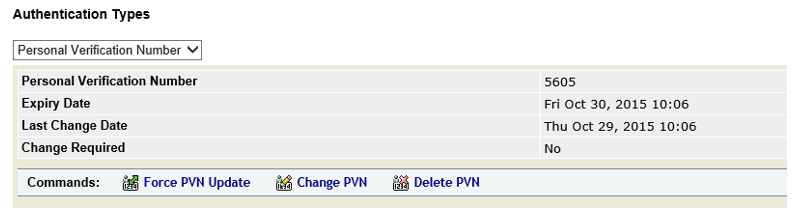

|
IdentityGuard Server 13.0 Administration Guide |
|
IdentityGuard Server 13.0 Administration Guide |
Administrators with applicable permissions can force users to change their PVN when the PVN has been in use for too long.
To force a user to update their PVN
1. Find users whose PVNs are too old. See Search for users by personal verification number.
On the Find Accounts page, select the Has a PVN option as part of your search criteria.
Select a range of dates that corresponds to the maximum PVN age used in your organization. (The maximum PVN age is determined by the PVN Lifetime policy. See Configure personal verification number policies.)
2. Select a user on the Search Results page.
The Account Information pane appears for the user.

3. Under Authentication Types, select Personal Verification Number.
4. Click Force PVN Update. Click OK when you are asked for confirmation. The Force PVN Update choice disappears.
Note: The only Entrust IdentityGuard policy that affects the actual PVN value is PVN Length (default 4). Any other PVN requirements (for example, rules to prevent reuse of the same PVN, or prevent use of simple sequences like 1234) would need to be enforced by the client application.
Note: The Radius proxy does not support the creation of new PVNs. If users access your application through a VPN, administrators must assign users their PVNs. PVN updates are supported through PAP only. (For details, on Radius protocols, see the Entrust IdentityGuard Installation Guide.)